Le flop qui a fait trembler les bassesThe flop that shook the bass
Ostende, Belgique, 1982. Marvin Gaye vit loin des États-Unis, sans groupe. Pour composer, il a une petite boîte à rythmes japonaise. Il programme un rythme, appuie sur lecture, et commence à chanter par-dessus. La chanson s’appelle « Sexual Healing ». La machine, c’est la Roland TR-808.Ostend, Belgium, 1982. Marvin Gaye is living far from the US, with no band. To write, he has a small Japanese drum machine. He programs a beat, presses play, and starts singing over it. The song is “Sexual Healing”. The machine is the Roland TR-808.
Une machine pour les maquettesA machine for demos
Chez Roland, à Osaka, le fondateur Ikutaro Kakehashi veut une boîte à rythmes bon marché, pour enregistrer des maquettes sans studio et sans batteur. Les vrais sons enregistrés coûtent trop cher en mémoire. L’ingénieur en chef Tadao Kikumoto choisit donc de fabriquer chaque son avec des circuits électroniques.At Roland in Osaka, founder Ikutaro Kakehashi wants a cheap drum machine, to record demos without a studio or a drummer. Real recorded sounds cost too much in memory. So chief engineer Tadao Kikumoto decides to build every sound from electronic circuits.
Pour le « grésillement » des cymbales, Kakehashi achète exprès un lot de transistors refusés au contrôle qualité. Un défaut volontaire qui deviendra une signature.For the cymbals’ “sizzle”, Kakehashi deliberately buys a batch of transistors that failed quality control. A deliberate flaw that will become a signature.
Ça ne sonne pas comme une batterieIt doesn’t sound like drums
La 808 sort en 1980 à 1 195 $, quatre fois moins cher que la Linn LM-1. Le problème saute aux oreilles : elle ne ressemble pas du tout à une vraie batterie. Un magazine compare le son de ces boîtes à des « fourmiliers qui marchent au pas ». Le Yellow Magic Orchestra, au Japon, est l’un des premiers à y croire.The 808 comes out in 1980 at $1,195, a quarter of the Linn LM-1’s price. The problem is obvious: it sounds nothing like real drums. A magazine likens these boxes to “marching anteaters”. Japan’s Yellow Magic Orchestra is among the first to believe in it.
Puis vient 1982. « Sexual Healing » devient un tube. À New York, Afrika Bambaataa et la Soulsonic Force sortent « Planet Rock » et font entrer la 808 dans les clubs. Trop tard pour Roland : en 1983, la machine est arrêtée après environ 12 000 exemplaires.Then comes 1982. “Sexual Healing” becomes a hit. In New York, Afrika Bambaataa and the Soulsonic Force release “Planet Rock” and take the 808 into the clubs. Too late for Roland: in 1983 the machine is discontinued after about 12,000 units.
La seconde vieSecond life
D’occasion, elle tombe sous les 100 $. À ce prix, elle finit chez des jeunes producteurs qui n’ont pas les moyens d’un studio : hip-hop, électro, house, techno. Jimmy Jam et Terry Lewis la font entrer dans le R&B avec The S.O.S. Band. Run-DMC, les Beastie Boys, puis Kanye West et la trap en font leur basse.Used, it drops below $100. At that price it ends up with young producers who can’t afford a studio: hip-hop, electro, house, techno. Jimmy Jam and Terry Lewis bring it into R&B with The S.O.S. Band. Run-DMC, the Beastie Boys, then Kanye West and trap turn it into their bass.
Arthur Baker, le producteur de « Planet Rock », l’a résumé ainsi : la 808 est la guitare électrique du hip-hop. Pas mal, pour une boîte à maquettes ratée.Arthur Baker, the producer of “Planet Rock”, summed it up: the 808 is the electric guitar of hip-hop. Not bad for a failed demo box.
En chiffresBy the numbers
Prix et nombre d’exemplaires selon Wikipedia, Vintage King et 5 Magazine.Price and unit count according to Wikipedia, Vintage King and 5 Magazine.
Comment ça marche, en clairHow it works, in plain words
Pas besoin d’être ingénieur : cinq idées pour comprendre pourquoi la 808 sonne comme ça.No engineering degree needed: five ideas to understand why the 808 sounds the way it does.
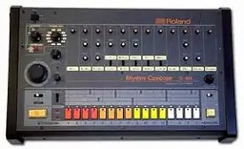
Un rythme, case par caseA beat, box by box
Chaque rangée est un instrument, chaque case un instant de la mesure. Les cases allumées jouent. La rangée Accent fait ressortir certains coups.Each row is an instrument, each box a moment in the bar. Lit boxes play. The Accent row makes some hits stand out.
Les sonsThe sounds
Seize sons répartis sur onze touches : certaines changent de son avec un petit sélecteur, toms ou congas, claquements de mains ou maracas.Sixteen sounds across eleven lanes: some switch with a small selector, toms or congas, handclap or maracas.
TR-808 contre Linn LM-1TR-808 vs Linn LM-1
| Roland TR-808 | Linn LM-1 | |
|---|---|---|
| SortieRelease | 1980 | 1980 |
| PrixPrice | 1 195 $ | 4 995 $ |
| SonsSounds | Synthèse analogiqueAnalog synthesis | Échantillons 8 bits8-bit samples |
| ProgrammationProgramming | Pas à pas, 16 casesStep, 16 boxes | En temps réel + quantificationReal time + quantize |
| ExemplairesUnits | ~12 000 | 500–725 |
| Son emblématiqueSignature sound | Grosse caisse sub-basseSub-bass kick | Caisse claire et toms réalistesRealistic snare and toms |
Qui l’a utilisée ?Who used it?
La 808 est souvent présentée comme la boîte à rythmes entendue sur le plus de tubes. Voici les artistes et disques connus, d’après les sources en bas de page. « Cités par Wikipedia » signale une simple mention, sans titre précis.The 808 is often called the drum machine heard on more hits than any other. Here are the known artists and records, based on the sources below. “Named by Wikipedia” flags a bare mention, with no specific track.
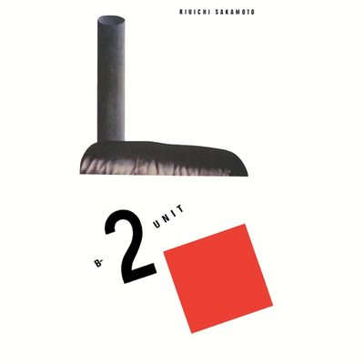
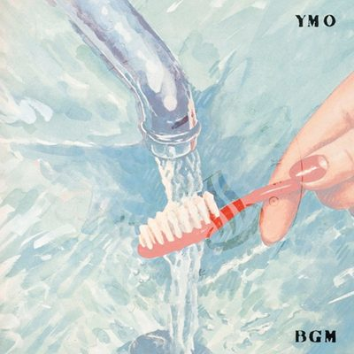
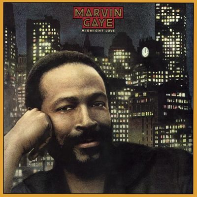
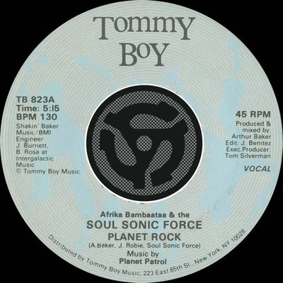
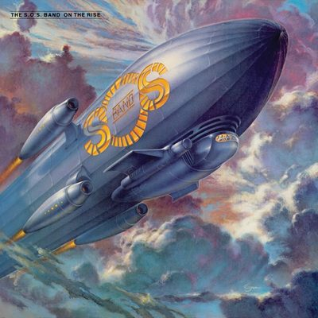
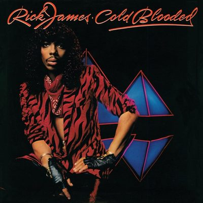
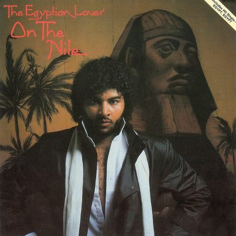
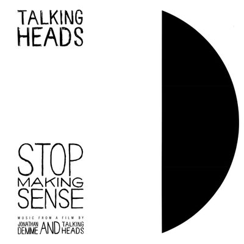
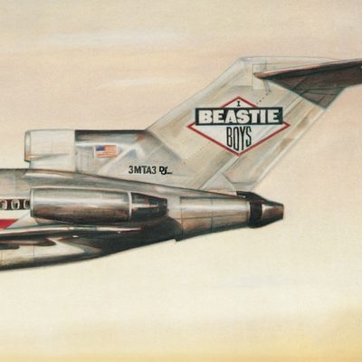
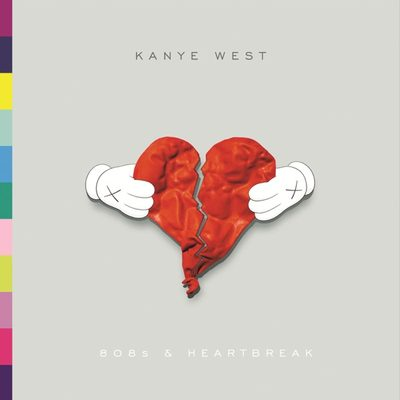
Soul, R&B, funkSoul, R&B, funk
| ArtisteArtist | DisqueRecord | Ce qu’on saitWhat we know |
|---|---|---|
| Marvin Gaye | Sexual Healing (1982) | Premier tube américain à la 808. Selon l’ingénieur Mike Butcher, Gaye est arrivé avec ses chansons déjà programmées sur la machine. Il disait la choisir pour travailler sans autres musiciens.First US hit with the 808. According to engineer Mike Butcher, Gaye arrived with his songs already programmed on it. He said he chose it to work without other musicians. |
| Rick James | Cold Blooded | |
| The S.O.S. Band | Just Be Good to Me (1983) | Jimmy Jam et Terry Lewis l’amènent dans le R&B, aussi sur « Tell Me if You Still Care », « Borrowed Love », « The Finest ».Jimmy Jam and Terry Lewis bring it into R&B, also on “Tell Me if You Still Care”, “Borrowed Love”, “The Finest”. |
| Jimmy Jam & Terry Lewis | — | Ensuite pour Alexander O’Neal, Cherrelle et Janet Jackson.Then for Alexander O’Neal, Cherrelle and Janet Jackson. |
| Kleeer, Loose Ends, René & Angela, B. B. & Q. Band, Freeez | — | Cités parmi les utilisateurs par Wikipedia.Listed among users by Wikipedia. |
| Michael Jackson, Prince | — | Cités parmi les utilisateurs par Wikipedia.Listed among users by Wikipedia. |
| Beyoncé, Rihanna, Chris Brown | — | Cités par Wikipedia ; Rihanna utilise sa grosse caisse comme métaphore du battement de cœur.Named by Wikipedia; Rihanna uses its kick as a heartbeat metaphor. |
Électro, techno, houseElectro, techno, house
| ArtisteArtist | DisqueRecord | Ce qu’on saitWhat we know |
|---|---|---|
| Yellow Magic Orchestra | BGM (1981) | Les premiers : une 808 prêtée par Roland, sur scène au Budokan dès 1980 (« 1000 Knives »).The first: an 808 lent by Roland, on stage at the Budokan in 1980 (“1000 Knives”). |
| Ryuichi Sakamoto | B-2 Unit (1980) | « Riot in Lagos ».“Riot in Lagos”. |
| The Monitors | Nobody Told Me (1981) | Un des deux premiers disques sortis avec la 808.One of the first two records released with the 808. |
| Afrika Bambaataa & the Soulsonic Force | Planet Rock (1982) | Inspiré de Kraftwerk et de YMO, le morceau fait de la 808 le son de l’électro.Inspired by Kraftwerk and YMO, it made the 808 the sound of electro. |
| Warp 9 | Nunk (1982) | |
| Charanjit Singh | Synthesizing: Ten Ragas to a Disco Beat (1982) | Avec une TB-303, des années avant l’acid house.With a TB-303, years before acid house. |
| Egyptian Lover | Egypt, Egypt (1984) | Il achète une 808 après avoir appris qu’elle jouait sur « Planet Rock ».He bought an 808 after learning it was on “Planet Rock”. |
| Cybotron, Man Parrish, Newcleus | — | L’électro new-yorkaise et de Detroit.New York and Detroit electro. |
| Derrick May, Juan Atkins | — | Machine préférée de la techno de Detroit, selon Wikipedia.A favourite machine of Detroit techno, according to Wikipedia. |
| 808 State | — | Le groupe de Manchester tire son nom de la machine.The Manchester group took its name from the machine. |
| New Order, Orbital, Aphex Twin, A Guy Called Gerald | — | Cités parmi les utilisateurs par Wikipedia.Listed among users by Wikipedia. |
Hip-hopHip-hop
| ArtisteArtist | DisqueRecord | Ce qu’on saitWhat we know |
|---|---|---|
| Run-DMC, LL Cool J, Public Enemy | — | Hank Shocklee, du Bomb Squad de Public Enemy : sans ce son, ce n’est pas du hip-hop.Hank Shocklee of Public Enemy’s Bomb Squad: without that sound, it isn’t hip-hop. |
| Beastie Boys | Licensed to Ill (1986) | « Paul Revere » utilise une 808 enregistrée à l’envers.“Paul Revere” uses an 808 recorded backwards. |
| 2 Live Crew | As Nasty As They Wanna Be (1989) | La basse de Miami.Miami bass. |
| Mantronix, T La Rock, Too Short, Sir Mix-a-Lot | — | |
| Dr. Dre, OutKast, Lil Jon, Lil Wayne | — | Cités par Wikipedia.Named by Wikipedia. |
| Kanye West | 808s & Heartbreak (2008) | La 808 sur chaque titre. Slate parle d’une lettre d’amour à la machine.The 808 on every track. Slate called it a love letter to the machine. |
| Trap | 2000s → | Les longues grosses caisses 808 deviennent la basse de tout un genre.Long 808 kicks become the bass of a whole genre. |
Pop et rockPop and rock
| ArtisteArtist | DisqueRecord | Ce qu’on saitWhat we know |
|---|---|---|
| David Byrne | Stop Making Sense (1984) | « Psycho Killer » en ouverture du film : une 808 dans un radiocassette posé sur scène.“Psycho Killer” opening the film: an 808 from a boombox on stage. |
| Charly García | Clics modernos (1983) | Toutes les percussions de l’album argentin.All the percussion on the Argentine album. |
| Phil Collins | — | Cité parmi les utilisateurs par Wikipedia.Listed among users by Wikipedia. |
| Madonna, Kesha | — | Sa grosse caisse comme battement de cœur dans leurs chansons.Its kick as a heartbeat in their songs. |
| Taylor Swift, Charlie Puth, Damon Albarn, Diplo, David Guetta, Fatboy Slim | — | Cités par Wikipedia.Named by Wikipedia. |
RepèresTimeline
- AvantBeforeDon Lewis, musicien et ingénieur américain, a modifié une boîte à rythmes Ace Tone. Ikutaro Kakehashi, fondateur d’Ace Tone puis de Roland en 1972, l’embauche pour concevoir des boîtes à rythmes. Roland sort la CR-78 en 1978.American musician and engineer Don Lewis had modified an Ace Tone drum machine. Ikutaro Kakehashi, founder of Ace Tone and then of Roland in 1972, hires him to design drum machines. Roland releases the CR-78 in 1978.
- Le choixThe choiceKakehashi veut une machine bon marché, pour les maquettes, sans studio ni batteur. L’ingénieur en chef Tadao Kikumoto écarte les échantillons, trop chers à cause de la mémoire, et fabrique chaque son avec des circuits analogiques.Kakehashi wants a cheap machine for demos, with no studio or drummer. Chief engineer Tadao Kikumoto rules out samples, too expensive because of memory, and builds every sound from analog circuits.
- Le « défaut »The “flaw”Kakehashi achète exprès un lot de transistors rejetés au contrôle qualité. Ils donnent à la machine son « grésillement ». Le circuit des voix est signé M. Nakamura, le logiciel M. Matsuoka.Kakehashi deliberately buys a batch of transistors that failed quality control. They give the machine its “sizzle”. The voice circuits are credited to Mr. Nakamura, the software to Mr. Matsuoka.
- 19801980Avant même la sortie, Roland prête une 808 au Yellow Magic Orchestra, qui l’utilise sur scène au Budokan de Tokyo pour « 1000 Knives ». La machine sort à 1 195 $, quatre fois moins cher que la Linn LM-1.Even before release, Roland lends an 808 to Yellow Magic Orchestra, who use it on stage at Tokyo’s Budokan for “1000 Knives”. The machine ships at $1,195, a quarter of the Linn LM-1’s price.
- 19811981Premiers disques : l’album BGM de YMO et le single « Nobody Told Me » des Monitors. La critique est dure : un magazine compare le son des boîtes analogiques à des « fourmiliers qui marchent au pas ».First records: YMO’s album BGM and the Monitors’ single “Nobody Told Me”. Reviews are harsh: a magazine likens analog drum boxes to “marching anteaters”.
- 19821982Seul à Ostende, en Belgique, Marvin Gaye compose « Sexual Healing » sur une 808 : c’est son premier tube aux États-Unis. La même année à New York, « Planet Rock » d’Afrika Bambaataa et la Soulsonic Force la fait entrer dans les clubs.Alone in Ostend, Belgium, Marvin Gaye writes “Sexual Healing” on an 808: its first US hit. The same year in New York, Afrika Bambaataa and the Soulsonic Force’s “Planet Rock” takes it into the clubs.
- 19831983Roland arrête la 808 après environ 12 000 exemplaires : les transistors ne peuvent plus être réapprovisionnés. La TR-909 prend la suite. D’occasion, la 808 tombe sous les 100 $.Roland discontinues the 808 after about 12,000 units: the transistors can no longer be restocked. The TR-909 takes over. On the used market, the 808 falls below $100.
- EnsuiteAfterÀ ce prix, elle tombe entre les mains de jeunes producteurs de hip-hop, d’électro, de house et de techno. L’échec commercial devient le son de plusieurs genres.At that price, it lands in the hands of young hip-hop, electro, house and techno producers. The commercial flop becomes the sound of several genres.
FicheFact file
- FabricantMaker
- Roland (Osaka, Japon)Roland (Osaka, Japan)
- ConceptionDesign
- Ikutaro Kakehashi, Don Lewis ; ingénieur en chef Tadao KikumotoIkutaro Kakehashi, Don Lewis; chief engineer Tadao Kikumoto
- AnnéesYears
- 1980–19831980–1983
- PrixPrice
- 1 195 $ au lancement$1,195 at launch
- SonsSounds
- 16 sons, tous fabriqués électroniquement16 sounds, all made electronically
- MémoireMemory
- 32 rythmes, à enchaîner en morceaux32 patterns, to chain into songs
- Les plusHighlights
- Grosse caisse très grave, volume par son, sorties séparéesVery deep kick, level per sound, separate outputs
- ExemplairesUnits
- Environ 12 000About 12,000
- SuccesseurSuccessor
- TR-909 (1983)TR-909 (1983)
Sur nos réseauxOn our socials
Chaque semaine, un disque et son histoire en vidéo.Every week, a record and its story on video.
Sources : Wikipedia, Roland TR-808 · Roland TR-808, manuel de service (1981) · K. J. Werner, J. S. Abel, J. O. Smith, modèle de la grosse caisse 808 (DAFx-14) · K. J. Werner et al., la cymbale de la 808 (ICMC-SMC 2014) · Raygum, monographie TR-808 · Raygum, atlas 808 · Vintage King, 808 Day · 5 Magazine, l’histoire de la 808 · Perfect Circuit, Roland TR-808 · Red Bull, morceaux clés à la 808 · Far Out, le premier morceau à la 808 · Happy Mag, la 808 · Thomann, Roland TR-808 · Google Arts & Culture, From a flop to the top · Linn LM-1, dossier cheetah vinyl
Photos de la TR-808 : fournies par cheetah vinyl.TR-808 photos: supplied by cheetah vinyl.